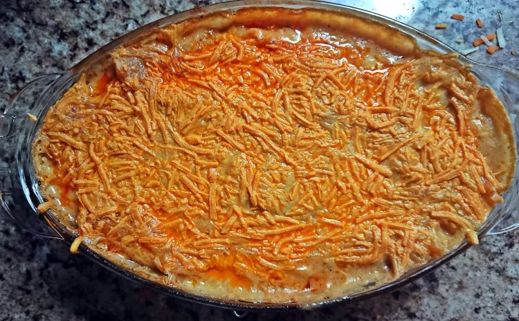

Try this decadent lasgana that is also gluten, dairy, and egg free. If you have alleriges or a celiac this lasgana is the one to try.
Ingredients
- 2 tablespoons olive oil
- 4 cloves garlic, minced
- 1 tsp crushed red chili peppers (optional)
- 1 lb ground beef/lamb
- 1 teaspoon oregano
- 1 teaspoon parslet
- 1 1/2 cup pasta sauce
- 1 onion, diced
Baking
1 cup dairy free cheddar style shreds
1 pack gluten free lasagna sheets
1 cup or as needed white sauce
Steps
- Preheat oven to 350℉. Boil the lasagna sheets until soft. Then, drain and set aside.
- Heat 2 tablespoons oil on medium heat. Add garlic and onions until tender.
- Add meat cook until brown.
- Add pasta sauce along with spices and herbs and cook until the sauce is thick.
Layering the lasagna
- Layer in an oven safe casserole dish. First, add a little pasta sauce to the bottom, then add lasagna sheets.
- Add meat, then add lasagna sheets.
- Add white sauce and lasagna sheets. Next add meat, then the white sauce.
- Keep repeating until pasta is used up, the top layer should be the white sauce. Then cover with cheese.
- Bake for 30 mintues with foil over the lasagna. Cook another 15 mintues without the foil in order for it to brown.
Gluten, Dairy, and Egg Free Lasagna